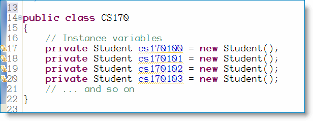
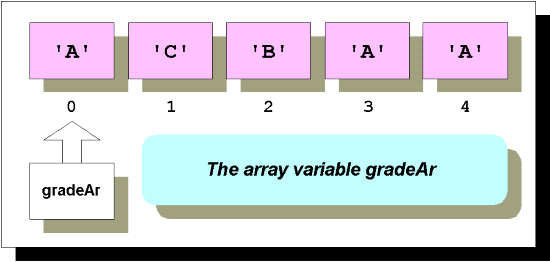
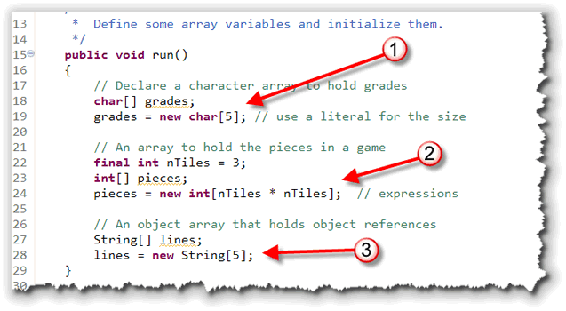

The Atacama Large Millimetre Array, (ALMA) is a collection of 64 radio antennas that work together as one telescope, to study millimetre-and submillimetre-wavelength light from space. ALMA is being built in Chile by an international partnership which includes the National Research Council of Canada and the U.S. National Radio Astronomy Observatory. It is the largest ground-based astronomy endeavor ever undertaken. You can find out more about ALMA at this site, sponsored by the Canadian National Research Council.
In Java, an array is similar. Arrays are the built-in Java type for holding collections of variables. Arrays are useful whenever you need to apply identical processing to all of the members of a group of related variables. You could use an array, for instance, to calculate the grades for an entire class of students, rather than performing the operation one-by-one.
In this lesson you'll learn:
- what array variables are, and why they're useful
- how to define and initialize array variables
In this lesson we'll focus on creating and using arrays of
primitive types. Later in the semester, once we've you've learned
to create your own object types, we'll cover object collections,
more complex array algorithms, and some of the Java collection
classes, like ArrayList.
The Java library actually contains many different kinds collection classes, which are commonly known as data structures or abstract data types. Chapters 15 and 16 in your textbook, (which we won't cover in this class), has an introduction to the most commonly used classes. If you're a Computer Science major, you'll take CS 200, Data Structures, which uses similar classes from the C++ Standard Template Library (STL).
What are Arrays?
Variables, you'll recall, are 'buckets' that hold a value. When you create the bucket, you have to say what kind of thing you're going to store in it; there are no "one size fits all" buckets, like there are in some languages.
Now, the only problem with variables comes whne you want to store a lot of values; creating individual variables for each value can quickly become very tedious—especially if the values are similar and somehow related. A program that keeps the records for a class of Java students, for instance, would need to declare variables for each each grade for each assignment for each student.
Even if we encapsulated all of the related data for each
student into a Student class, (something you'll start
learning about at the end of this unit), you'd still be left with
something like this:

While you certainly could write code like this, imagine how long and unwieldy your program would become when it came time to add the scores for a quiz, for instance. You'd need to have a separate statement for each student variable.You probably think "There has to be a better way!", and you're right, there is.
Meet the Array
The solution that's built into the Java language is called the array. An array is a collection variable:
- an array can hold multiple values rather than just a single value.
- An array can store values of any type—either primitive
values or object references (such as
Strings)—but each of the values in a single array must all be of the same type. You can't put eggs in a muffin-tin or bake muffins in an egg crate (so to speak).
Array Elements
When you create an array, you give the entire collection a
name, just like you would any other simple variable.
I think of it like the name of a neighborhood like Newport Heights
or Turtle Ridge.
Just like you would indicate the houses in a neighborhood by their
street number, you access the individual data values stored in the
array—these are called the array elements—by
specifying an index or subscript representing its
position in the collection.
The only tricky thing about this is that you have to remember
that in Java, the first element of the array has the subscript 0,
the next 1, and so on. Of course, you're already somewhat
familiar with this concept, since it's the same numbering scheme
that's used for locating the individual characters inside of
a String.
Why Start At 0?
One of the perennial debates in programming language circles has to do with whether array elements should be numbered starting with zero or one. Java, like C and C++, uses zero-based arrays. While you might not like this, it may help a little if you understand why zero-based arrays are used.
If you think of the array subscript as the number of the element—#1, # 2, etc...—then zero based arrays make no sense at all. After all, what does it mean to be the "zeroth" element?
But, array subscripts are not the number of the element; instead, the subscript is an offset from the beginning of the array. When you tell the compiler to retrieve myArray[5], you are telling it to go to the array named myArray, then "walk past" five elements and bring you the element it finds there. If you tell it to access myArray[0], the compiler knows it doesn't have to skip any elements at all, and it brings you the first element.
When you create an array, all of the elements are stored right next to each other in memory; we say that the elements are contiguous. Since each value must be the same type, each value uses exactly the same amount of memory, which allows Java to locate an individual value very quickly using simple arithmetic. If the first element is at address 100 in memory, and each element is 4 bytes long, the 1000th element must be at 100 + 4 * 1000.
Array Variables
In Java, arrays variables are references, just like object variables. (Java is different in this regard than some other languages, like Pascal and C. Other language, though, like C# use the same general method as Java.)
An array variable does not actually contain the individual values in the array, it refers to them. Thus, two array variables can "point to" the same actual array containing the values.
Here's an example. The array variable named gradeAR
pictured here is a char array variable. The variable
gradeAR refers to a five-element array of
char values.

The individual elements in gradeAR are each
indexed or subscripted, starting at 0 and going
to 4. (For another illustration that shows the same thing, look at
the diagram showing the array named data in the
Section 7.1 of your textbook.)
Now that you have a conceptual picture of what an array looks like, let's turn to the Java instructions you use to create and initialize array variables.
Creating Arrays
Creating an array
is a two step process, just like creating an object. You
learned how to do this (conceptually) in Unit 2 and have put it
to work in the last unit when working with the Scanner
class as an iterator.
When you create an object, you first declare an object variable, like this:
Scanner cin;
and then create and "attach" (using assignment) an actual object to the object variable, like this:
cin = new Scanner(System.in);
Even though we've normally done the previous two steps in one statement, logically they are two separate steps. The first step creates a variable which can refer to an object, while the second step creates an object and attaches it to a variable.
Arrays work in an almost identical manner: the two steps are to declare the variable and then create the array. The syntax is slightly different than that used to create objects and object variables, though.
Step 1: Declare the Variable
To declare an array variable you specify:
- The type of elements you'll store in the array. This can be any type, object or primitive. We're going to concetrate on primitive types in this unit.
- A name for the entire collection. Here you must follow the standard naming rules. There are no special names for arrays.
- A set of empty square brackets (
[]) following either the variable name or the type name. This is how you signify that this is an array variable instead of a simple variable.
Even though the brackets can go after either the variable name or the type name, you should place them immediately after the type name. The post-variable-name syntax was allowed because that's the syntax in C and C++. Placing the brackets after the type name associates the brackets with the type rather than with the variable, and is the almost universal convention among Java programmers.
Declaration Examples
Here are a few examples to give you the idea.
- This example creates an array variable that holds
chars. We've put the brackets after the type name.
You should read this as "
gradesis an array ofchar"char[] grades;
- This example creates an array variable that holds ints.
Here we've put the brackets after the variable name, but you
really shouldn't use this syntax.
Read this as "
piecesis an array ofint". - This example creates an array variable that holds
Cards. The
Cardclass is a user-defined class that you'll create later in the semester. As you can see, the syntax is just the same whether you're creating an array of primitive types or of object references.Card[] deck;
int pieces[];
To actually store values in the collection, though, you'll have to create the actual elements that make up the array. Here's how.
Step 2: Create the Array Elements
Just as with objects, the actual array is created by using
the new operator. When used to create an array,
the syntax used with new is a little different
than the syntax used to create an object.
When creating an object, you use an object constructor which appears on the right side of the assignment operator. When creating an array, you use an array constructor. Here's the difference
Object Constructors
An object constructor uses the name of the class, followed by parentheses and any parameters that are required by the constructor, like this:
// Object Constructors
public void run()
{
Scanner cin;
cin = new Scanner(System.in);
Scanner fileItr;
fileItr = new Scanner(MediaTools.openDataFile("moby.txt")));
}
Object constructors are actually methods, defined inside the class of the object you are creating.
- A class may have several overloaded constructors,
like the
Scannerclass does, here for instance. You can construct aScannerthat reads from the keyboard, and another that reads from a file, by changing the type of parameters. - You do not use a constructor to create primitive variables.
Array constructors are different.
Array Constructors
An array constructor uses the name of the class or the name of a primitive type, followed by a set of brackets, instead of parentheses.

Inside the brackets, instead of different parameters like you would use with an overloaded object constructor, you put the number of elements you want your array to have. The number:
- Can be a constant, like the 5 used for
gradesin the example you just saw. Thegradesarray has five elements, and the subscripts go from zero to four. - Can be an expression or variable, like the
expression
nTiles * nTiles, used for thepiecesarray. Thepiecesarray has nine elements, and the subscripts go from zero to eight.
Note: When you create an array that holds
objects or Strings, such as lines (3),
the array actually holds references to those objects.
You still have to create the object variables in a separate step.
You'll learn how to do that when we cover objects in a later
section.
Array Initialization
If you like, you can declare an array variable and create the array at the same time. This is actually quite common. Here's what it looks like:
double[] scores = new double[5];
When you first create an array using new, the values
stored in each of the elements are set to:
- 0 if the array holds integer or character values.
- false if the array holds
booleanvalues. - The value null if the array holds object (or
String) references. Thus each element of theStringarraylines, defined earlier in this lesson, is thenull String, not the emptyString.
Please note that this is different than simple variables. With a simple variable, default (automatic) initialization is only provided if the variable is a field, (declared outside of all methods). All array variables, both fields and locals, are automatically initialized when you create them.
Explicit Initialization
Often, however, this default initialization is not what you want. If this is the case, then you'll have to explicitly initialize your variables. You can initialize the elements in an array in two ways:
- You can explicitly set each element by using the subscripted name of each element and storing a value in that element. This is most often done in a loop.
- You can provide a set of initial values in an initializer list.
Initializer Lists
To explicitly provide a set of initial values, you write each
value, separated by commas, inside a set of braces. When you do
this, you cannot supply a size for the array and you
usually do not use the new operator.
Here's an example declaration that shows you how to do this:
char[] allGrades = {'A', 'B', 'C', 'D', 'F', 'W', 'I'};
When you write this, the Java compiler counts the number of elements in your initializer and automatically creates a seven-element array. (Make sure you don't forget the semicolon at the end of the list.)
Java vs C/C++ Initialization
If you know a litte C or C++, don't confuse the way that
Java does things and the way that C does it. Java does not
have partial array initialization, like C, where you can
combine an explicit array size with a partial
initialization list.
You can also use a similar (although infrequently used) syntax,
which employs both the intitializer list, and the
new operator, to create something like an
array literal, which
can be assigned to an array variable, like this:
int[] ar;
ar = new int[] { 1, 2, 3 };
This creates an anonymous array holding the values 1, 2,
and 3, and assigns a reference to the variable ar.
If you wanted to pass an array literal to a procedure
that expected to receive an array, you could use an
annonymous array like this:
doSomeProcedure(new int[]{1, 2, 3}); // actual parameter is a literal array
Accessing Array Elements
Now that you know how to create arrays, it's time to put them to work; you don't want all of those elements sitting around collecting dust, do you?
You'll first learn about storing and retrieving values in individual elements. Then, in the next two lessons you'll learn how to processes arrays using loops, write methods that take arrays as parameters and how to write methods that return array values.
Storing and Retrieving Values
To access an individual array element, you use the name of the array and add the subscript of the element you want to access in brackets following the name. This is known as the subscripted name or an array variable.
Using this "compound" name, you can
store new values in individual elements, or retrieve values
from individual elements in the array.
For example, to store a new grade into the first element of
grades, you just do this:
grades[0] = 'C';
In the same way, you can retrieve a value simply by using the subscripted variable name in an expression, like this:
int i = 0;
char current = grades[i];
As you can see, when you use the subscripted name, the subscript (index) does not have to be a constant. You can use a variable or an expression as long as the result is an integer value.
Although the type of the variable grades is
char[] (array of char), the type of the
individual elements (grades[0]) is
plain-old char. You treat each of the individual
elements just as if it were a simple char variable.
Errors
Of course, this means you have to remember to store only compatible values. If you try this, for instance:
grades[1] = 3.2;
you'll get a compiler error because you can't store a
double value, (3.2), in a char variable.
A more common mistake is to create a runtime error by
trying to store values (or retrieve values) from an element
outside the bounds of the array. The most common cause of this
error is forgetting that a five-element array, like
grades, has subscripts that range from
zero to four. The expression
grades[5] = 'C';
will trigger a runtime error, (an ArrayIndexOutOfBounds
exception). You'll learn how to deal with this error later
in the semester when you look at exceptions.
The length Field
Every array variable has a public field named
length that you can use to discover how many
elements are in the array. There are two things you should
remember when using the length field:
- In an array,
lengthis a field; in aString,length()is a method. It's easy to get the two of these confused.String s = "Abara";
int lenS = s.length();
int lenA = grades.length; - The
lengthfield stores the number of elements in the array, not the highest subscript number, which is alwayslength-1.grades[length] = 'C'; // NO
grades[length-1] = 'C'; // OK
Coming Up ...
In this lesson you learned how to declare array variables and
how to use the new operator to allocate an actual array.
You also learned how to initialize the elements in an
array by using an initializer list. You also learned how to use
access the individual elements in an array.
In the next lesson we'll look at using loops and methods to process arrays.